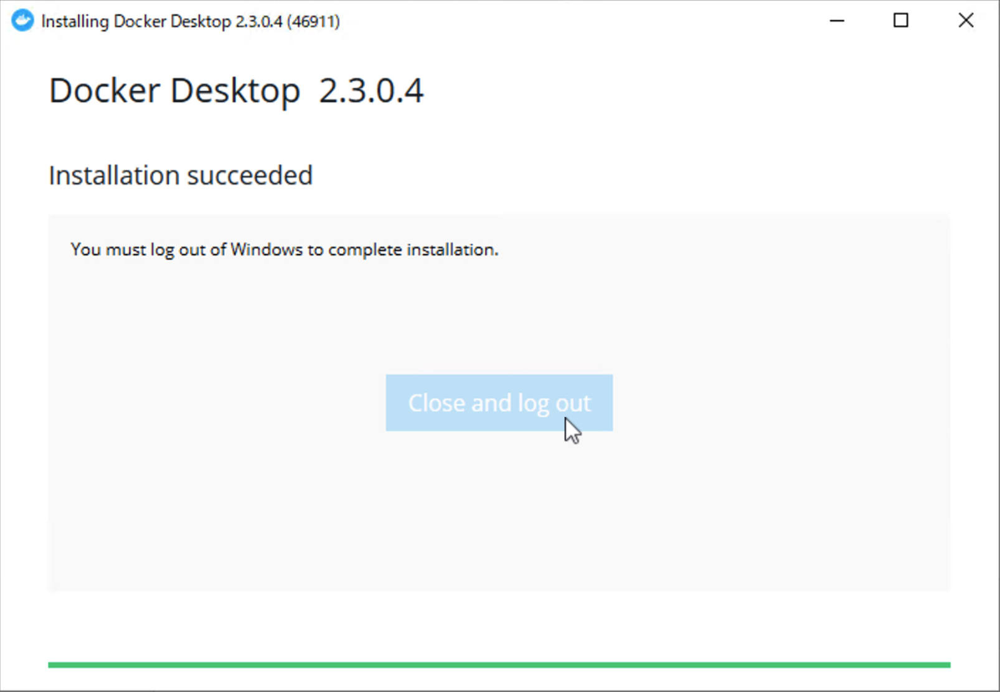
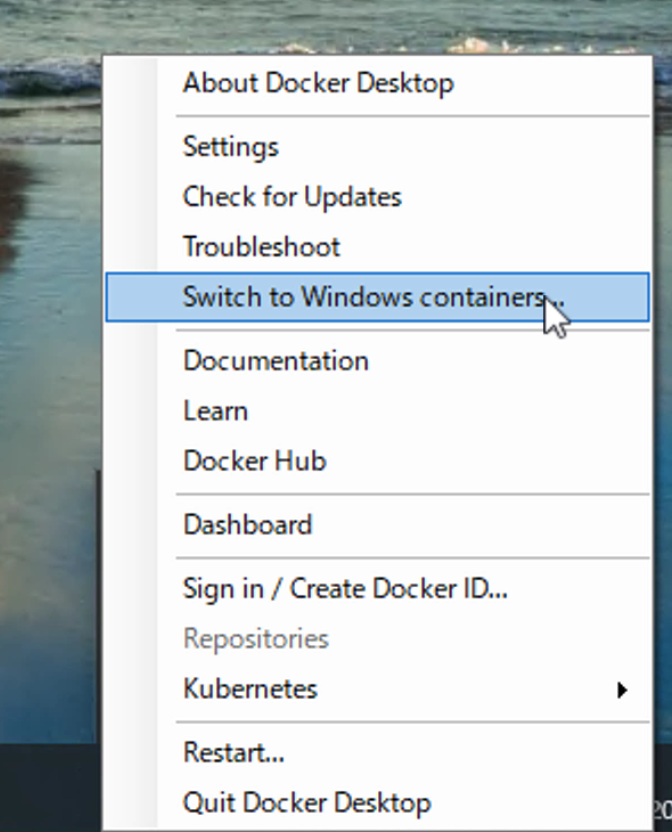

5.1. Docker for Windows のインストール¶
ここでは Docker の環境を整えるための手順を紹介しています。
5.1.1. Windows 環境の調整¶
Docker for Windows は Windows Server 2019 および Windows 10 Pro で利用することができます。必要となるコンポーネントは、以下の通りです。
コンテナ
Hyper-V

5.1.2. ソフトウェアのインストール¶
Docker を利用するにあたって、以下の２つのツールは便利ですのでインストールを推奨します。
続いて、以下のサイトから Docker for Windows をダウンロードしてインストールしてください。
インストールが完了すると、以下のようにダイアログが表示されます。
{kind=link}
一度ログオフをした後、ログインをすると Docker が起動します。この際、Docker のアイコンをクリックして、Windows Container に切り替えてください。
{kind=link}
コンテナが切り替わったところで、以下の動作確認を実行していきます。
5.1.3. 動作確認¶
今回は、プロジェクトのためのフォルダを作成して、以下のような dockerfile （拡張子はありません）を作成します。
FROM mcr.microsoft.com/windows/servercore:ltsc2019
新しい環境で構築をしているので、イメージが何も入っていないのを確認します。
PS C:\Users\shini\docker> docker image ls
REPOSITORY TAG IMAGE ID CREATED SIZE
PS C:\Users\shini\docker>
イメージが何もない状況です。ここで Dockerfile を利用して、build を実行します。
PS C:\Users\shini\docker> docker build -t sitecore/demo .
Sending build context to Docker daemon 2.048kB
Step 1/1 : FROM mcr.microsoft.com/windows/servercore:ltsc2019
ltsc2019: Pulling from windows/servercore
4612f6d0b889: Pull complete
3ab49687905c: Pull complete
Digest: sha256:30f8f12fc7a3da27e2b9e8c6c7f564f78a7610594713ae49143e5808e1fe7b36
Status: Downloaded newer image for mcr.microsoft.com/windows/servercore:ltsc2019
---> 86eddd4761f5
Successfully built 86eddd4761f5
Successfully tagged sitecore/demo:latest
PS C:\Users\shini\docker>
作成されたイメージの一覧を確認します。初回は何もありませんでしたが、２つイメージができています。
PS C:\Users\shini\docker> docker image ls
REPOSITORY TAG IMAGE ID CREATED SIZE
sitecore/demo latest 86eddd4761f5 2 weeks ago 5.03GB
mcr.microsoft.com/windows/servercore ltsc2019 86eddd4761f5 2 weeks ago 5.03GB
PS C:\Users\shini\docker>
実際に、作成をしたイメージを実行します。
PS C:\Users\shini\docker> docker run --name windowscore -it sitecore/demo powershell
実行している PowerShell のバージョンを確認すると以下のようになります。
Windows PowerShell
Copyright (C) Microsoft Corporation. All rights reserved.
PS C:\> $PSVersionTable
Name Value
---- -----
PSVersion 5.1.17763.1007
PSEdition Desktop
PSCompatibleVersions {1.0, 2.0, 3.0, 4.0...}
BuildVersion 10.0.17763.1007
CLRVersion 4.0.30319.42000
WSManStackVersion 3.0
PSRemotingProtocolVersion 2.3
SerializationVersion 1.1.0.1
PS C:\>
手元の環境の PowerShell のバージョンと比較をしてみてください。